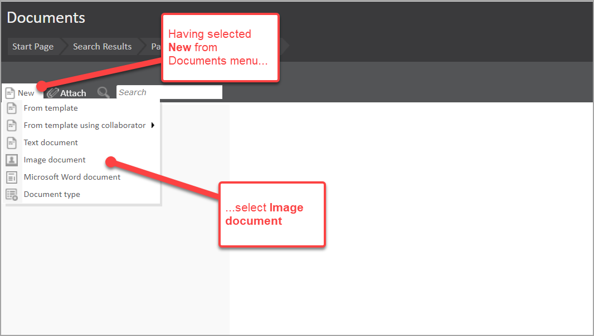
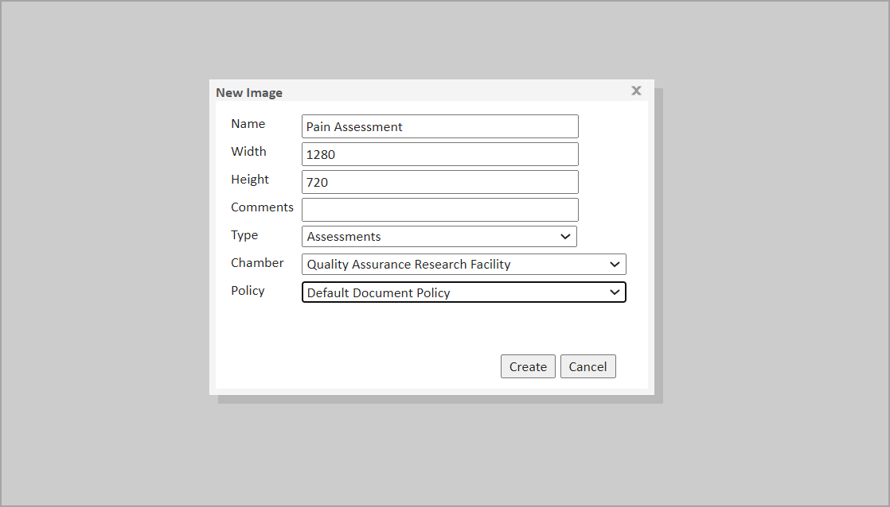
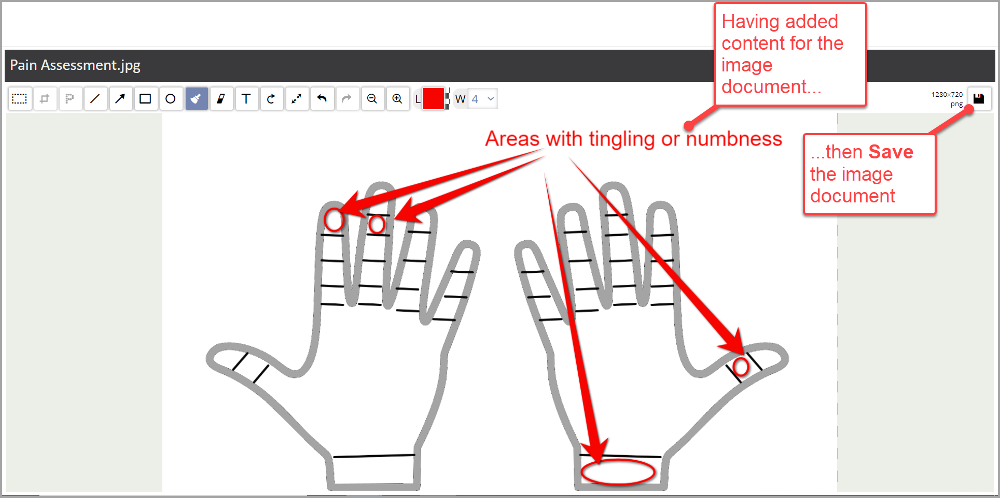
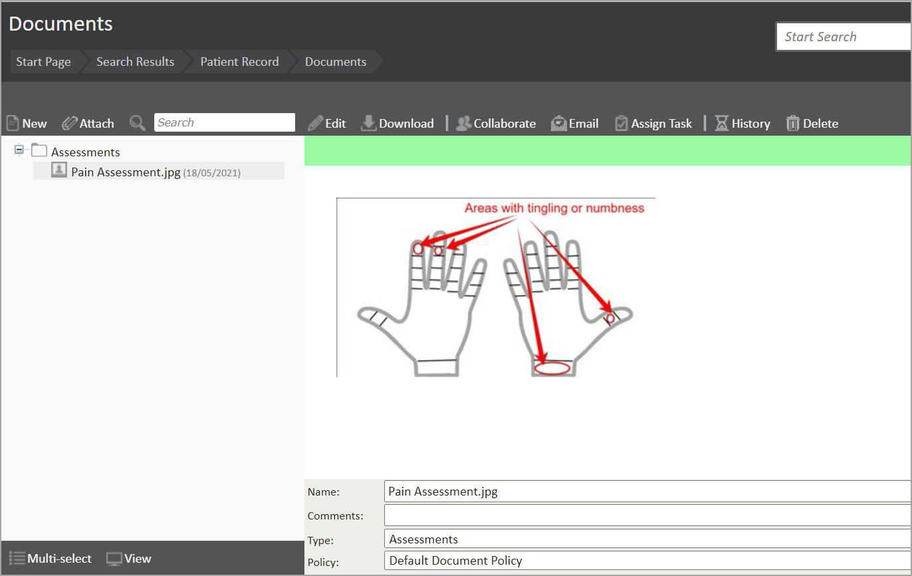
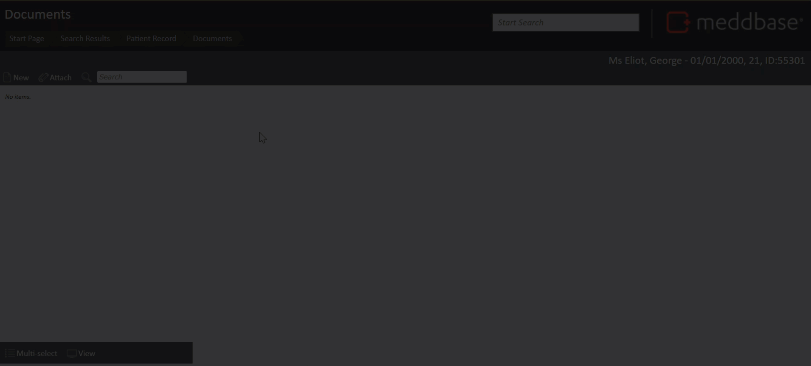

Within Meddbase, you can create image documents that enable the addition of images and different types of annotation. This article summarises how you can create a new image document.
To create a blank image document from the patient context, you can do as follows:



The document is then saved to the patient record. When consequently viewed in the Documents page, the image document appears with a thumbnail similar to the screen below.

There is a companion article that explains the features available for Image documents.
The short video below summarises the walk-through from the documents page of the patient record through to saving. It also demonstrates a few elements of image editor functionality.
